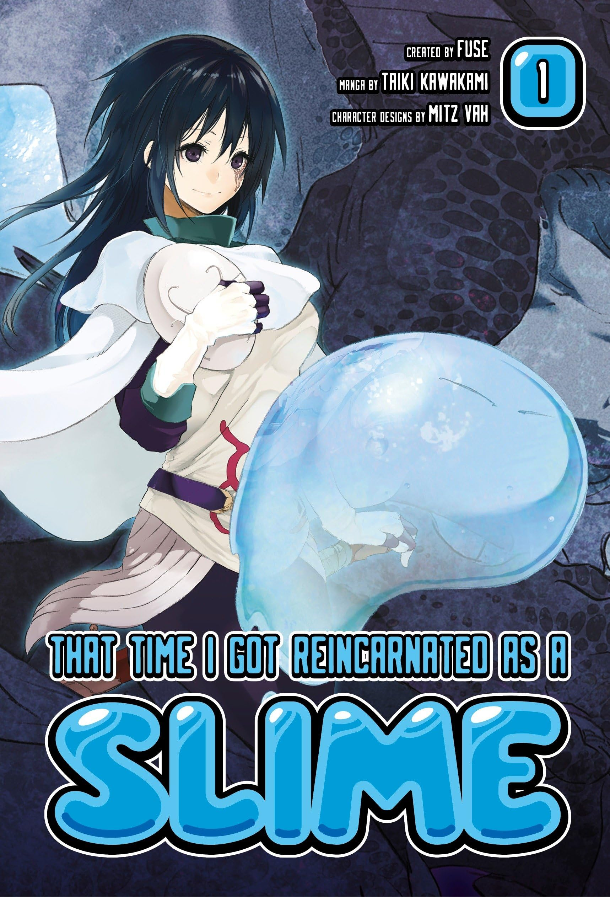
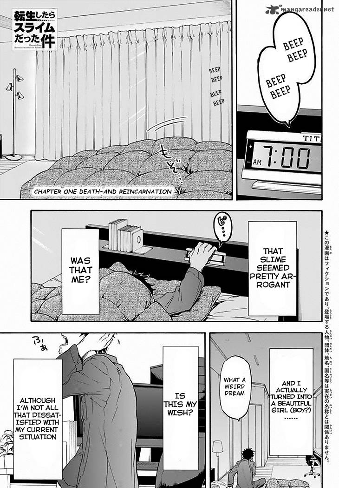

Tensei Shitara Slime datta Ken
by Fuse
Synopsis
Satoru Mikami, an ordinary office worker, is reincarnated in a fantasy world as a powerful slime named Rimuru Tempest after being killed in a stabbing incident. Armed with unique abilities, including Predator and Great Sage, Rimuru befriends monsters, gains extraordinary powers, and dreams of creating a world where humans and monsters can live together peacefully.
Chapter 1

Satoru Mikami lives an ordinary life in Tokyo until he is attacked while protecting his colleague. As his consciousness fades, mysterious voices announce the acquisition of strange abilities.
He awakens in a mysterious cave, discovering that he has been reincarnated as a slime. Exploring his new surroundings, he encounters the mighty Storm Dragon V
— End of chapter —